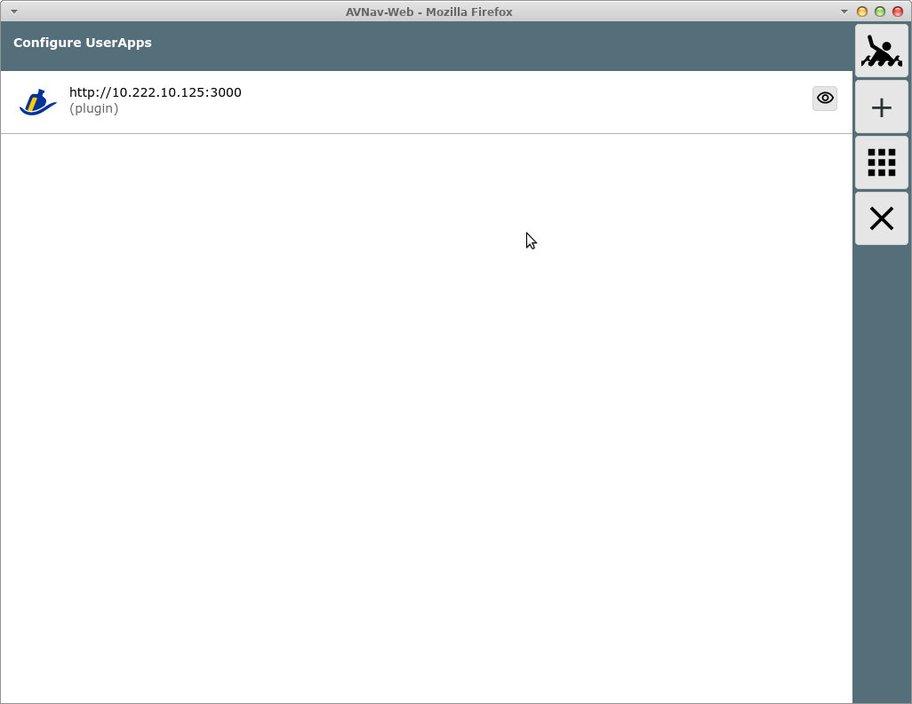

Um ggf. weitere Tools in AvNav einzubinden, gibt es die Möglichkeit "User
Apps" bzw. Addons zu konfigurieren. Wenn solche addons konfiguriert sind,
ist auf der Hauptseite ein App-Button  sichtbar, über den eine Seite mit diesen
User-Apps erreicht werden kann.
sichtbar, über den eine Seite mit diesen
User-Apps erreicht werden kann.

Im Bild ist diese Seite zu sehen, wenn das signalK plugin aktiv ist (das erzeugt eine solche User-App für das signalK Web Interface).
Für jede UserApp wird ein Icon benötigt (Upload vorzugsweise in das
Images Verzeichnis über Files/Download  ,
,  ). Ausserdem wird entweder eine externe URL
oder eine HTML Seite, die in das user-Verzeichnis geladen wurde benötigt.
). Ausserdem wird entweder eine externe URL
oder eine HTML Seite, die in das user-Verzeichnis geladen wurde benötigt.
Über die Konfigurationsseite für die User Apps (Settings  , User Apps
, User Apps  ) kann man dann Einträge erzeugen, die zu
neuen Buttons auf der User App Seite führen.
) kann man dann Einträge erzeugen, die zu
neuen Buttons auf der User App Seite führen.

Mit dem "+" Button wird ein neuer Eintrag erzeugt.

Wenn "internal" selektiert wird, stehen die HTML Seiten im Nutzer-Verzeichnis zur Auswahl.
Der Eintrag "title" entscheidet, ob ein Titel-Balken auf der Seite angezeigt wird oder nicht.
Achtung: Wenn eine solche User App angelegt oder modifiziert wird, verändert der Server seine avnav_server.xml Datei. Falls dabei etwas kaputt gehen sollte, wird er beim nächsten Start auf eine Kopie dieser Datei mit der Endung ".ok" zurückfallen, die beim letzten erfolgreichen Start angelegt wurde.
Über den Button  kann direkt der Eintrag auf der User Apps Seite
angezeigt werden.
kann direkt der Eintrag auf der User Apps Seite
angezeigt werden.

Hier im Bild der Beispiel-Eintrag.
Wenn solche User-Apps mit internen HTML Dateien angelegt wurden und die HTML Datei wird gelöscht, dann wird auch der User App Eintrag gelöscht.
Falls eines der verwendeten Icons gelöscht wird, wird die User-App auf der Seite nicht mehr angezeigt, über die Konfiguration kann sie aber wieder bearbeitet werden.